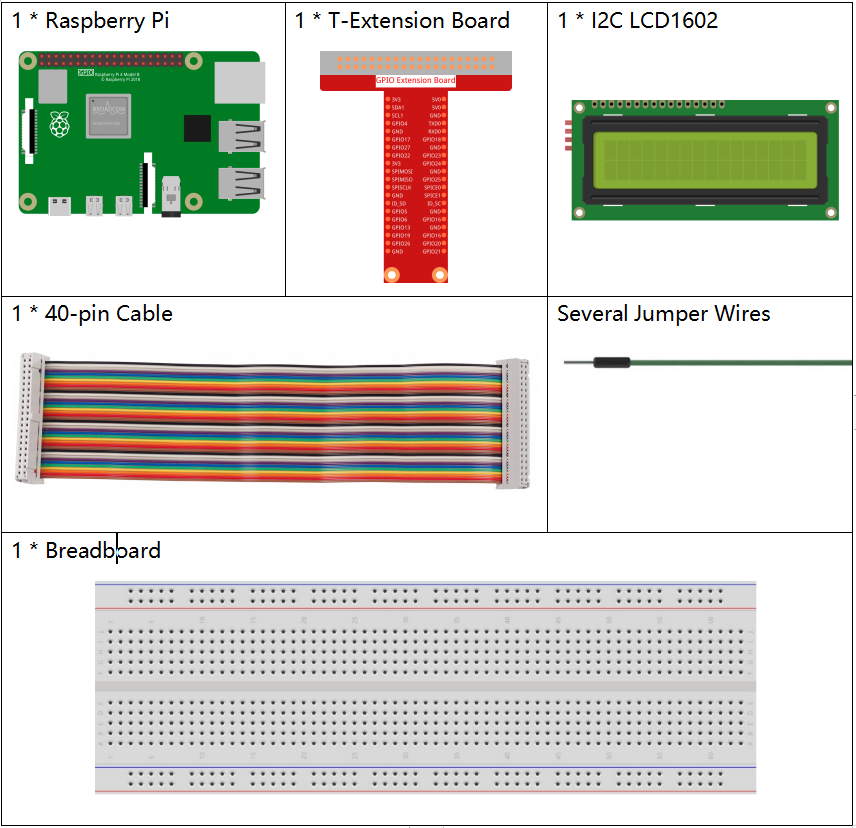
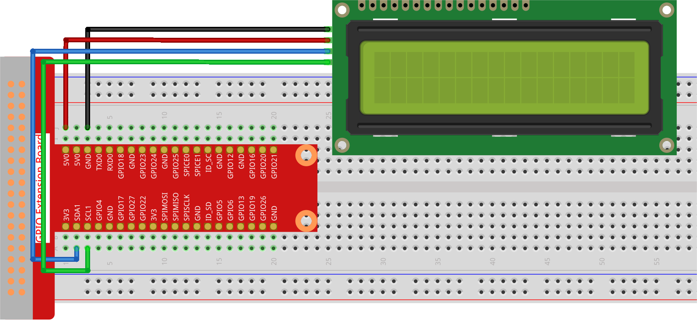

Nota
Ciao e benvenuto nella Community di Appassionati di SunFounder per Raspberry Pi, Arduino ed ESP32 su Facebook! Immergiti nel mondo di Raspberry Pi, Arduino ed ESP32 insieme a tanti altri appassionati.
Perché Unirsi?
Supporto da Esperti: Risolvi problemi post-vendita e sfide tecniche con l’aiuto della nostra community e del nostro team.
Impara e Condividi: Scambia consigli e tutorial per migliorare le tue competenze.
Anteprime Esclusive: Ottieni accesso anticipato agli annunci dei nuovi prodotti e a contenuti inediti.
Sconti Speciali: Approfitta di sconti esclusivi sui nostri prodotti più recenti.
Promozioni Festive e Giveaway: Partecipa a giveaway e promozioni festive.
👉 Pronto a esplorare e creare con noi? Clicca su [Qui] e unisciti oggi stesso!
1.1.7 LCD1602 I2C
Introduzione
L’LCD1602 è un display LCD a caratteri, capace di visualizzare 32 caratteri (16*2) contemporaneamente.
Componenti Necessari
In questo progetto, abbiamo bisogno dei seguenti componenti.
Schema Elettrico
T-Board Name |
physical |
SDA1 |
Pin 3 |
SCL1 |
Pin 5 |

Procedure Sperimentali
Passo 1: Assembla il circuito.
Passo 2: Configura l’I2C (consulta Configurazione I2C. Se l’I2C è già configurato, salta questo passaggio.)
Passo 3: Cambia la directory.
cd ~/davinci-kit-for-raspberry-pi/python-pi5
Passo 4: Esegui.
sudo python3 1.1.7_Lcd1602.py
Dopo l’esecuzione del codice, vedrai il messaggio Saluti!, Da SunFounder visualizzato sul display LCD.
Nota
Se appare l’errore
FileNotFoundError: [Errno 2] No such file or directory: '/dev/i2c-1', consulta Configurazione I2C per abilitare l’I2C.Se si verifica l’errore
ModuleNotFoundError: No module named 'smbus2', eseguisudo pip3 install smbus2.Se appare l’errore
OSError: [Errno 121] Remote I/O error, significa che il modulo è collegato in modo errato o è danneggiato.Se il codice e il cablaggio sono corretti, ma l’LCD non mostra ancora contenuti, regola il potenziometro sul retro per aumentare il contrasto.
Avvertimento
Se compare l’errore RuntimeError: Cannot determine SOC peripheral base address, consulta Se gpiozero non funziona.
Codice
Nota
Puoi Modificare/Reimpostare/Copiare/Eseguire/Interrompere il codice qui sotto. Prima di farlo, però, vai al percorso del codice sorgente, come davinci-kit-for-raspberry-pi/python-pi5. Dopo aver modificato il codice, potrai eseguirlo direttamente per vedere il risultato.
#!/usr/bin/env python3
import LCD1602 # Importa il modulo per interfacciarsi con LCD1602
import time # Importa il modulo per le funzioni di temporizzazione
def setup():
# Inizializza LCD con indirizzo I2C 0x27 e abilita la retroilluminazione
LCD1602.init(0x27, 1)
# Mostra il messaggio 'Saluti!' nell'angolo in alto a sinistra (riga 0, colonna 0)
LCD1602.write(0, 0, 'Greetings!')
# Mostra il messaggio 'Da SunFounder' sulla seconda linea (riga 1, colonna 1)
LCD1602.write(1, 1, 'From SunFounder')
time.sleep(2) # Visualizza i messaggi per 2 secondi
try:
setup() # Esegui la funzione setup per inizializzare l’LCD e visualizzare i messaggi
except KeyboardInterrupt:
# Cancella il display LCD se si verifica un'interruzione da tastiera (es. Ctrl+C)
LCD1602.clear()
pass # Procedi senza ulteriori azioni
Spiegazione del Codice
Questo file è open source per il controllo dell’I2C LCD1602. Consente un utilizzo semplice dell’LCD1602 tramite I2C.
import LCD1602 # Importa il modulo per interfacciarsi con LCD1602
La funzione inizializza il sistema I2C con il simbolo del dispositivo specificato. Il primo parametro è l’indirizzo del dispositivo I2C, rilevabile tramite il comando i2cdetect (vedi Appendice per dettagli). L’indirizzo di LCD1602 I2C è generalmente 0x27.
# Inizializza LCD con indirizzo I2C 0x27 e abilita la retroilluminazione LCD1602.init(0x27, 1)
LCD1602.writeviene utilizzato per visualizzare messaggi su LCD. I primi due parametri sono posizione di riga e colonna, e il terzo è il messaggio. Ora puoi vedere “Saluti! Da SunFounder” visualizzato su LCD.# Mostra il messaggio 'Saluti!' nell'angolo in alto a sinistra (riga 0, colonna 0) LCD1602.write(0, 0, 'Greetings!') # Mostra il messaggio 'Da SunFounder' sulla seconda linea (riga 1, colonna 1) LCD1602.write(1, 1, 'From SunFounder')